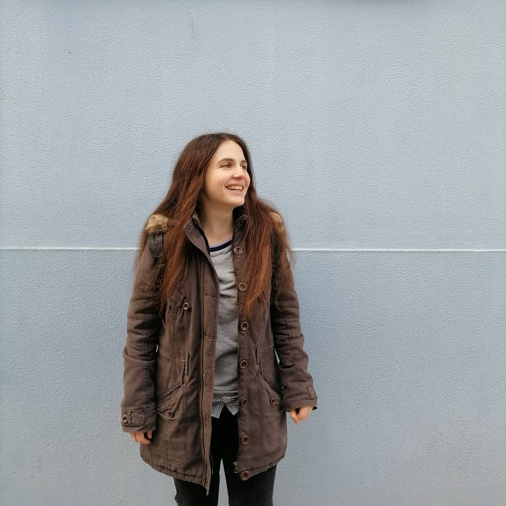

COMPUTER SCIENCE & ENGINEERING GRADUATE
Hello, I'm Angeliki Myrto Kokora.
Programmer and technology enthusiast with an interest in software development, computer architecture, digital design and electronics.
I enjoy challenging problems, learning new technologies and building projects that bring software and hardware concepts together.
ABOUT ME
A curious engineer who enjoys solving problems.
I graduated from the Computer Science and Engineering Department of the University of Ioannina. I am a hardworking individual who enjoys challenges and I am looking for career opportunities that will allow me to expand my knowledge of computer science and electronics, use my skills, and work with different people to achieve a common goal.
SELECTED WORK
Projects I've built and studied.
Open a project to see its technologies, purpose and implementation details.
.NET Forum Project
A forum application backend built with .NET 10, following Clean Architecture principles and exposing a REST API.
Qt File Analyzer
A multithreaded desktop file analyzer in C++ and Qt with asynchronous processing to keep the UI responsive.
Microprocessors Course Projects
Python programs for signal probabilities and switching activity, plus a custom CPU architecture in Verilog.
Electronic System Testing & Reliability
Addition of Built-in Self-Test (BIST) capabilities to a Circuit Under Test (CUT).
Digital Design II
VHDL projects covering binary multiplication, vector sorting and multiplication of 4-bit element vectors.
Compilers Course Project
A compiler written in Python that converts a program in a custom language to RISC-V assembly.
Compilers II
A compiler/translator that converts source code in a custom object-oriented language into standard C code.
Software Engineering Project
A web application for managing diploma thesis projects made with the Spring framework.
LEARNING